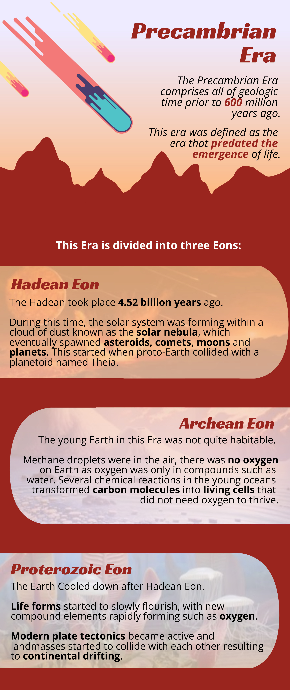

The History of the Earth
In its 4.54 billion years, Earth's history predates way before we, humans, set foot on its soil. Time marched forward, giving way to evolutionary change which brought us to the world we have today. With that said, It is believed that it is a necessity that we acknowledge the geological periods of this world's ancestry and ours.
The geological time scale dates back from the Precambrian Era - the earliest part of Earth history. Also known as the "Age of Early Life", this particular time period was when the continents were formed and our modern atmosphere developed, alongside the flourishing of early life. Soft-bodied creatures like worms and jellyfish lived in the world's oceans, but the land remained barren. Common Precambrian fossils include stromatolites and similar structures, which are traces of mats of algae-like microorganisms, and microfossils of other microorganisms. With its time span, the Precambrian was divided into 3 eons: Hadean, Archean, and Proterozoic.